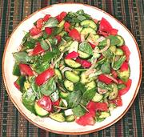

|
Tomato & Purslane SaladTurkey - Pirpirim / Semizotu Piyaz | ||||
| Serves: Effort: Sched: DoAhead: |
6 salad * 20 min Yes |
An excellent salad with which to start (or finish) dinner. It will be equally at home as part of a Western, Turkish or Middle Eastern meal. | |||
|
|
12 12 5 4 4 4 1/2 2 1 1/2 1/2 1-1/2 1 |
oz oz oz oz oz oz T T t t t T t |
Tomatoes Cucumbers (1) Purslane (2) Bell Pepper, red Bell Pepper, green Onion Salt Lemon Juice Pomegranate Syrup Sumac Powder Salt Olive Oil ExtV. Aleppo Chili (3) |
Make: - (20 min)
|
tgv_tompurs1 090711
Almost Turkish - www.clovegarden.com
©Andrew Grygus - agryg@clovegarden.com - Linking to
and non-commercial use of this page permitted